八大关 景区
时间：2019/11/11

【简介】
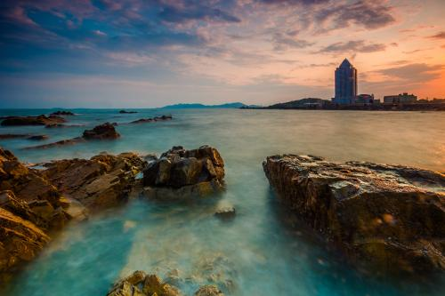八大关(Eight Great Passes)，位于山东省青岛市市南区汇泉东部，太平山南麓，始建于20世纪30年代，是中国著名的风景疗养区，面积70余公顷 八大关是最能体现青岛“红瓦绿树、碧海蓝天”特点的风景区，位于山东省青岛市汇泉角景区北部。 所谓"八大关"，是因为这里有八条马路（现已增到十条），是以中国古代长城著名关隘命名的。此处是著名的别墅区，人称“万国建筑博物馆”。
【景区】
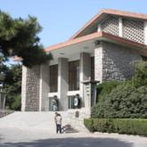
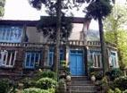
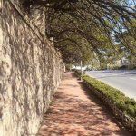
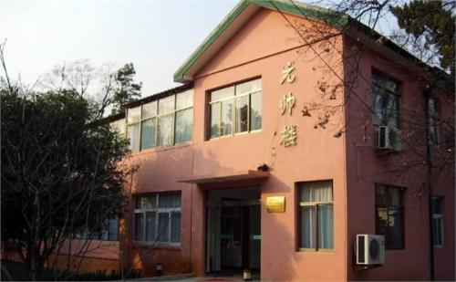
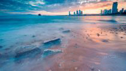
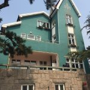
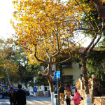
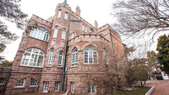
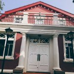
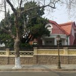
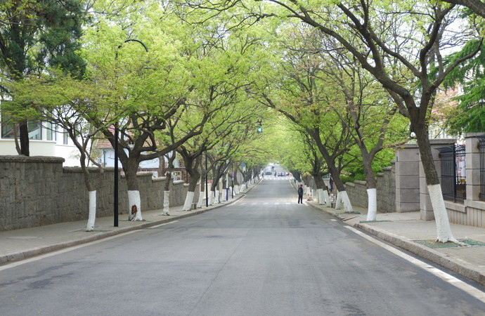
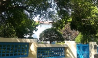
花石楼、第二海水浴场、山海关路21号、函谷关路、正阳关路、元帅楼、八大关小礼堂、蝴蝶楼、公主楼、钓鱼台、居庸关路号、宋家花园、朱德别墅、
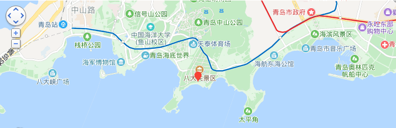
青岛八大关公交：乘26路; 31路环线; 202路环线; 206路环线; 223路; 228路环线; 231路环线; 304路; 311专; 312路; 312路区间;316路; 317路; 321路环线; 370路环线; 604路环线; 605路在武胜关路站下车。 乘214，219路公交车在“正阳关路”站下车，或乘旅游观光1路公交车在“八大关”站下车。乘468路公交车在宁武关路站下车。 乘地铁M3号线在太平角公园站下车。